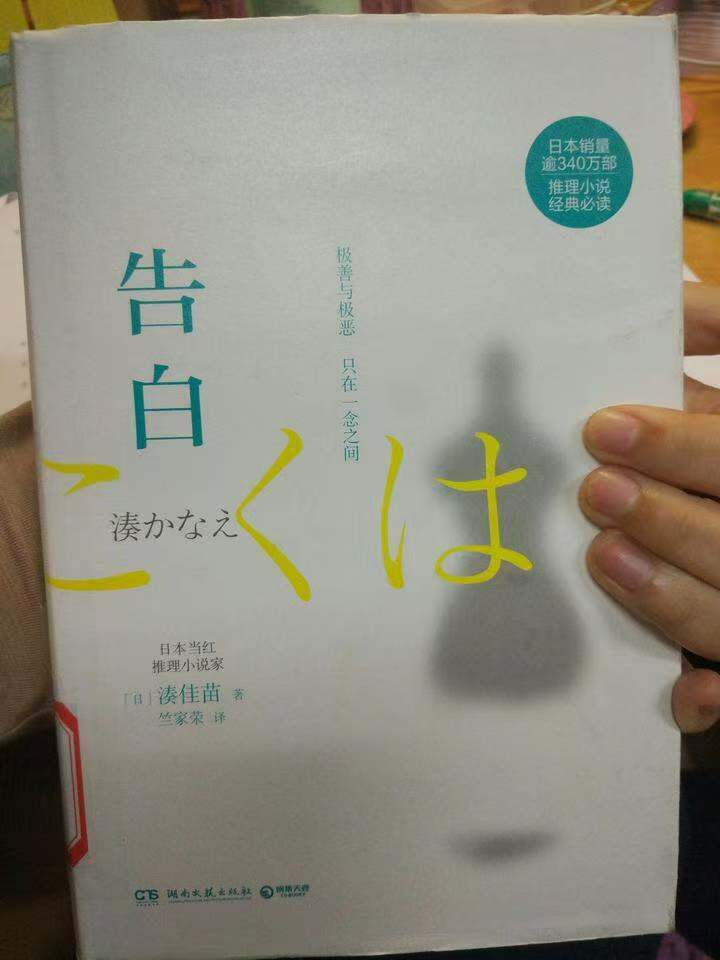
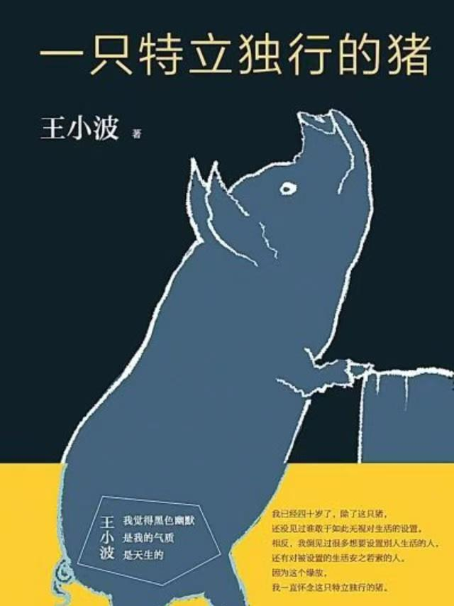

.jpg) 贝客邦，商业动画师,豆瓣阅读征文大赛首奖、小雅奖最佳作者，代表作品有《轮回前的告别》《冬至前夜》等。擅长创作生活情感类悬疑故事，作品用丰富的生活细节和严密的心理推理过程揭示看似简单却又出人意料的真相。
贝客邦，商业动画师,豆瓣阅读征文大赛首奖、小雅奖最佳作者，代表作品有《轮回前的告别》《冬至前夜》等。擅长创作生活情感类悬疑故事，作品用丰富的生活细节和严密的心理推理过程揭示看似简单却又出人意料的真相。
不同于紫金陈的《坏小孩》，贝客邦的《海葵》是一本非常成熟且典型的家庭悬疑类作品（我不确定是不是国内第一部正式的家庭悬疑类小说，即使不是也肯定是其中最优秀的！），它日常描写生动，文笔上佳，有诡案，有怪事，更有温情，这就极为难得了！
结局还算好，阅读体验是一种70%无人生还的感觉。
再解释一下书名的含义：所谓海葵，看上去很像花朵，很美丽，其实不然，有毒哦，没事千万别乱碰。
.jpg) 《小王子》这部童话虽然只是作者在3个月一气呵成的作品，但却有着深刻的创作背景，是作者几年、甚至是几十年生活和情感的积累，是厚积薄发的产物。它不仅是一部给孩子看的童话，更是哲理与思考的“结晶”，充满了对人生的感悟。
《小王子》这部童话虽然只是作者在3个月一气呵成的作品，但却有着深刻的创作背景，是作者几年、甚至是几十年生活和情感的积累，是厚积薄发的产物。它不仅是一部给孩子看的童话，更是哲理与思考的“结晶”，充满了对人生的感悟。
不同年龄段阅读时会有不同的感悟和理解。
《小王子》以极其纯真但却本质的语言告诉我们爱和生命的真谛，或许还有幸福的真谛，这个世界上有那么多一样的玫瑰，有那么多的人一样，为什么我们唯独爱着爱着爱着眼前的那个呢？是因为他比别人好吗，并不是，只是因为我们遇见，并驯养了他，他就从千千万万的人中间，成为了对自己来说独一无二的存在，而这就是相爱的秘密。
该书主要讲述了一位中学女老师在校园游泳池内发现自己的四岁女儿意外溺毙，后来经她私下调查，原来是班上两位学生谋杀的，但杀人动机实在荒唐。痛失爱女的老师辞职，不向警方申请重新调查，而在结业式那天向全班学生告白真相，并透露了她的复仇计划，在学生们的心底种下恐惧的种子的故事。
《一只特立独行的猪》全书以 王小波 文革时期下乡插队时的一个故事为 叙述主体，故事主角“猪”是中国散文中非常罕见的表现对象，这个对象的选择其实也说明了作品本身具有一种特立独行的因素。 在作者看来人和猪一样，也是只求自由的本性，“它们会自由自在地闲逛，饥则食渴则饮，春天来临时还要谈谈“爱情”，无疑，猪所处的这种 自然状态，正如人所追求的自由生活一样，是一种自然的要求和生活方式。